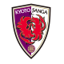

等々力スタジアムで行われた第2節、川崎フロンターレと京都サンガF.C.が2-2の激しい打ち合いの末に痛み分けとなった。前半44分にロマニッチが先制点を挙げ川崎がリードして折り返したが、後半に入ると京都が畳み掛ける。54分に福田心之助、58分にラファエル・エリアスが立て続けにゴールを決めて逆転に成功した。しかし川崎も食い下がり、65分にマルシーニョが同点弾を叩き込み、最終スコアは2-2で決着した。
この試合では京都のアレックス・ソウザが前半早々に警告を受け、後半にはウェベルトンにもカードが提示された。川崎側は大関友翔が終盤にイエローカードを受けている。両チームともに退場者は出さず、最後まで緊張感のある展開が続いた。
試合後、両サポーターの間では守備の脆さを指摘する声が目立った一方、攻撃面での明るい兆しを歓迎する意見も多く見られた。特に川崎側では新加入選手の活躍やビルドアップの整備が高く評価され、京都側は勝ち点1を前向きに捉える声とともに、決定機を活かしきれなかった悔しさもにじんだ。